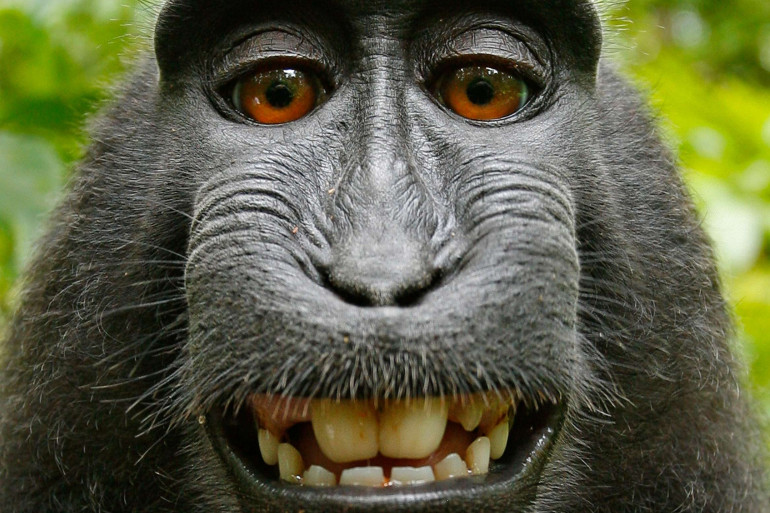

Que faites-vous là ??? On avait dit qu'il fallait cliquer sur le nez ou les yeux de Samuel !! Quand on vous dit que les gens d'aujourd'hui sont pas très futs futs c'est pas des mensonges à ce que je vois ^^ :)
